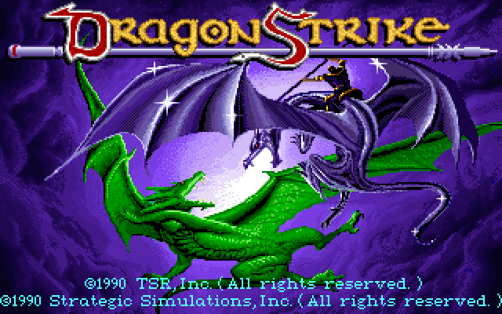
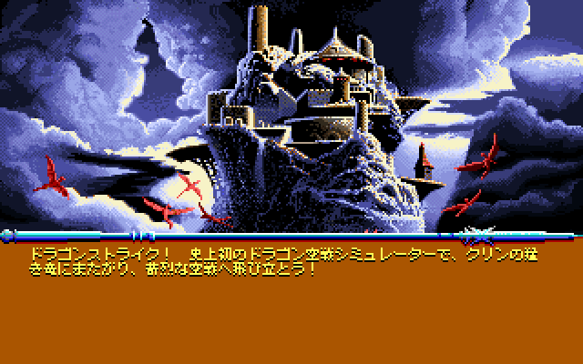
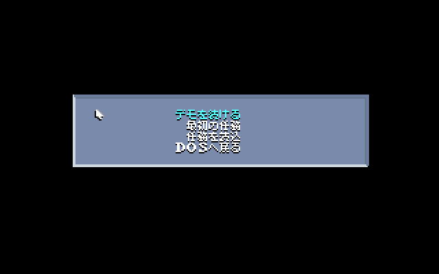
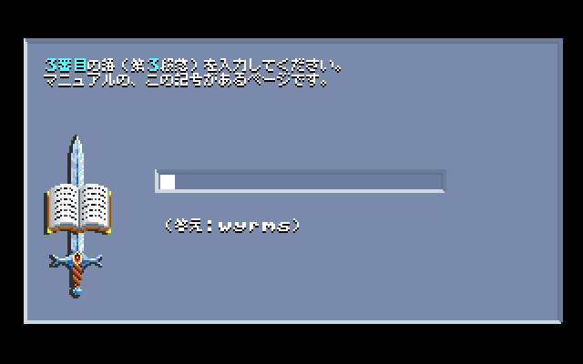
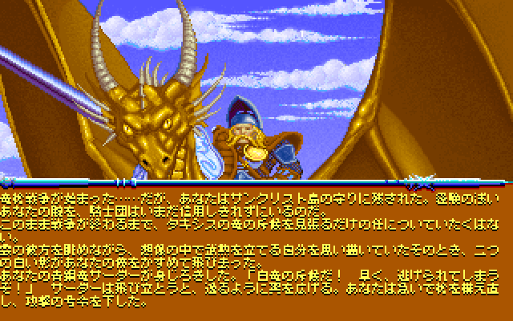
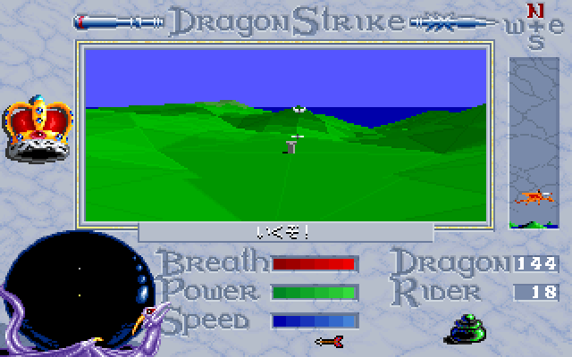
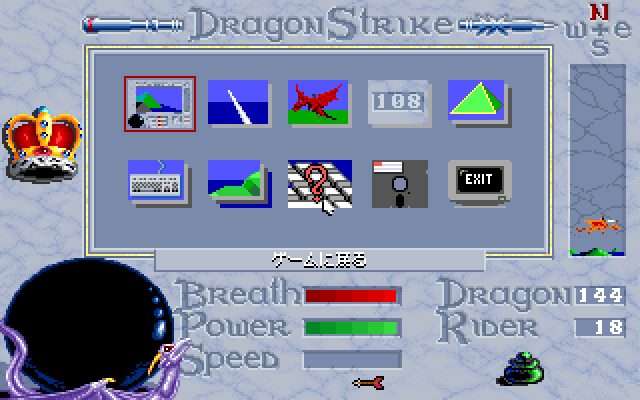
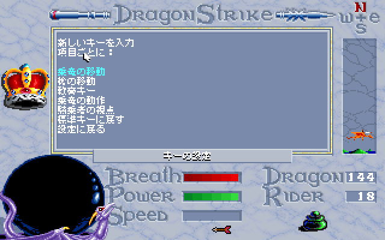
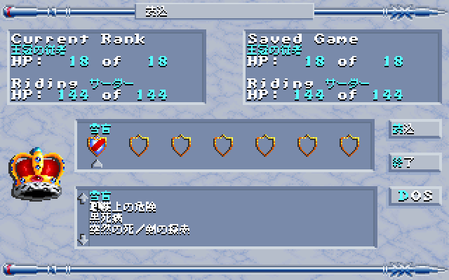
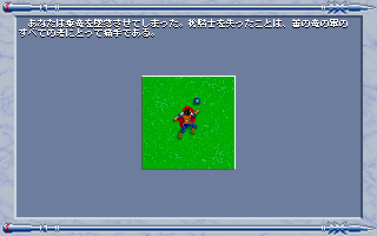

どんなゲーム？
ドラゴンストライクは、1990年に SSI から発売された AD&D 公式ライセンスのドラゴン空戦シミュレーターです（開発は Westwood Associates）。舞台はドラゴンランスの世界クリン、竜槍戦争のさなか。
プレイヤーはソラムニア騎士団の若い竜騎士となり、善の竜にまたがって槍と剣で戦います。白竜の斥候の追撃から始まり、ワイヴァーンや悪の竜、ドラゴン卿と戦う任務をこなすごとに騎士団の位が上がり、乗る竜も青銅竜から銀竜・金竜へと変わっていきます。
DragonStrike
Steam 版「DragonStrike」を日本語で遊べるようにする、非公式のファンメイドパッチです。 物語と各任務の前置き、任務の結果、飛行中のメッセージ、メニューとキー設定の画面、任務の名前や騎士団の位までを日本語にしています。 コピープロテクトの問いには答えの語を表示します。 ゲームの DOSBOX フォルダにファイルを 1 つ置くだけで日本語になり、消せば英語に戻ります。
ドラゴンストライクは、1990年に SSI から発売された AD&D 公式ライセンスのドラゴン空戦シミュレーターです（開発は Westwood Associates）。舞台はドラゴンランスの世界クリン、竜槍戦争のさなか。
プレイヤーはソラムニア騎士団の若い竜騎士となり、善の竜にまたがって槍と剣で戦います。白竜の斥候の追撃から始まり、ワイヴァーンや悪の竜、ドラゴン卿と戦う任務をこなすごとに騎士団の位が上がり、乗る竜も青銅竜から銀竜・金竜へと変わっていきます。










DragonStrike_JP.zip を展開します。winmm.dll を、ゲームの DOSBOX フォルダ（DOSBox.exe があるフォルダ）にコピーします。games\Dragon Strike\DOSBOX に進みます。GOG 版の DOSBox（0.74-2.1）にも合わせてあります。GOG 版でも、ゲームを入れたフォルダの中の DOSBOX フォルダに winmm.dll を置いてください（GOG 版の DOSBox 0.74-2.1 で日本語になることは確かめましたが、GOG 版のゲームそのものでの動作はまだ確かめていません）。
ゲームのファイルは書き換えません。日本語化に使うファイル（EXE や文章に手を入れたコピー）は、起動時に %LOCALAPPDATA%\DS_JP フォルダに作られます。
DOSBOX フォルダの winmm.dll を消すと英語に戻ります。%LOCALAPPDATA%\DS_JP フォルダも消してかまいません。セーブデータはそのまま使えます。誤訳や不自然な訳に気づいたら、GitHub の Issues で教えてください。